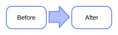
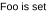

Class wibox.container.conditional
A container displaying a child widget when a condition is met.
This widget accept multiple widget templates (or instances) and will display the first one matching the condition. If templates are provided (instead of widget instances), the widget will be created only when the condition is met.
If multiple candidates meet, the condition, the first one is used.
Please note that the widget and children properties are read-only due
to the nature of this widget.
Each template (or widget instance) encapsulated by this container has the following properties:
- when (function, mandatory): The function called to determine if the condition is met. It has to return true or false. It will be called when eval is called or when one of the attached signal is emitted.
- selected_callback (function): When the template is selected.
- deselected_callback (function): When the template is no longer selected.
- updated_callback (function): When eval returns the same condition has before.
This widget can be tailored to specific use case. For example, to track the focused client:
local function extended_conditional() return wibox.container.conditional { argument_callback = function() return client.focus, awful.screen.focused().selected_tag end, connected_global_signals = { {client , 'focus' }, {tag , 'property::selected' }, {tag , 'property::activated' }, } } end local widget = wibox.widget { { text = 'There is no tag!', when = function(focused_client, current_tag) -- luacheck: no unused args return not current_tag end, widget = wibox.widget.textbox }, { text = 'There is no client!', when = function(focused_client, current_tag) -- luacheck: no unused args return not focused_client end, widget = wibox.widget.textbox }, { text = 'There is a client!', when = function(focused_client, current_tag) -- luacheck: no unused args return true end, widget = wibox.widget.textbox }, layout = extended_conditional }

Info:
- Copyright: 2016-2018 Emmanuel Lepage Vallee
- Author: Emmanuel Lepage Vallee <elv1313@gmail.com>
Functions
| wibox.container.conditional ([widget[, args={}]]) | Returns a new conditional container. |
Object properties
| wibox.container.conditional.widget | The current child widget instance. |
| wibox.container.conditional.templates | The list of conditional templates. |
| wibox.container.conditional.default_when | Set the fallback conditional handler. |
| wibox.container.conditional.selected_template | The list of conditional templates. |
| wibox.container.conditional.attached_signals | Return all attached signals. |
| wibox.container.conditional.connected_global_signals | The list of global signals used to automatically call eval(). |
| wibox.container.conditional.argument_callback | Controls the arguments passed to the when callback. |
| wibox.container.conditional.forced_height | Force a widget height. |
| wibox.container.conditional.forced_width | Force a widget width. |
| wibox.container.conditional.opacity | The widget opacity (transparency). |
| wibox.container.conditional.visible | The widget visibility. |
Signals
| widget::layout_changed | When the layout (size) change. |
| widget::redraw_needed | When the widget content changed. |
| button::press | When a mouse button is pressed over the widget. |
| button::release | When a mouse button is released over the widget. |
| mouse::enter | When the mouse enter a widget. |
| mouse::leave | When the mouse leave a widget. |
Methods
Functions
Methods- wibox.container.conditional ([widget[, args={}]])
-
Returns a new conditional container.
- widget The widget to display. (optional)
- args table Options for this widget. (default {})
Object properties
- wibox.container.conditional.widget
-
The current child widget instance.
The widget that has been produced be the
current_template.This property is read only.
Type:
- widget
- wibox.container.conditional.templates
-
The list of conditional templates.
Type:
- templates table
- wibox.container.conditional.default_when
-
Set the fallback conditional handler.
When no
whenfunction is set on the template, this one is called. This is useful if an extended version of this widget adds additional properties to templates.Type:
- function
- wibox.container.conditional.selected_template
-
The list of conditional templates.
Type:
- selected_template table The selected template or a widget instance
- wibox.container.conditional.attached_signals
-
Return all attached signals.
The format is a list of tables with the object as the first value and the signal name has the second.
Type:
- table
- wibox.container.conditional.connected_global_signals
-
The list of global signals used to automatically call
eval().The format is a table of table with objects as keys and signal name as values.
Type:
- table
Usage:
local widget = wibox.widget { { text = 'Useless example!', when = function() return true end, widget = wibox.widget.textbox }, connected_global_signals = { {client, 'focused' }, {tag , 'selected' }, {tag , 'activated'}, }, layout = wibox.container.conditional }
- wibox.container.conditional.argument_callback
-
Controls the arguments passed to the
whencallback.This is useful when extending this container to fit specific purposes.
All values returned by this function will be passed to the
whencallback. Note that it will be called only once for all templates.The default value returns the conditional widget instance.
The callback has a single parameter (the widget instance).
Type:
- function
- wibox.container.conditional.forced_height
-
Force a widget height.
Type:
- height
number or nil
The height (
nilfor automatic)
- height
number or nil
The height (
- wibox.container.conditional.forced_width
-
Force a widget width.
Type:
- width
number or nil
The width (
nilfor automatic)
- width
number or nil
The width (
- wibox.container.conditional.opacity
-
The widget opacity (transparency).
Type:
- opacity number The opacity (between 0 and 1) (default 1)
- wibox.container.conditional.visible
-
The widget visibility.
Type:
- boolean
Signals
- widget::layout_changed
-
When the layout (size) change.
This signal is emitted when the previous results of
:layout()and:fit()are no longer valid. Unless this signal is emitted,:layout()and:fit()must return the same result when called with the same arguments.See also:
- widget::redraw_needed
-
When the widget content changed.
This signal is emitted when the content of the widget changes. The widget will
be redrawn, it is not re-layouted. Put differently, it is assumed that
:layout()and:fit()would still return the same results as before.See also:
- button::press
-
When a mouse button is pressed over the widget.
Arguments:
- lx number The horizontal position relative to the (0,0) position in the widget.
- ly number The vertical position relative to the (0,0) position in the widget.
- button number The button number.
- mods table The modifiers (mod4, mod1 (alt), Control, Shift)
- find_widgets_result The entry from the result of
wibox.drawable:find_widgets for the position that the mouse hit.
- drawable wibox.drawable The drawable containing the widget.
- widget widget The widget being displayed.
- hierarchy wibox.hierarchy The hierarchy managing the widget's geometry.
- x number An approximation of the X position that the widget is visible at on the surface.
- y number An approximation of the Y position that the widget is visible at on the surface.
- width number An approximation of the width that the widget is visible at on the surface.
- height number An approximation of the height that the widget is visible at on the surface.
- widget_width number The exact width of the widget in its local coordinate system.
- widget_height number The exact height of the widget in its local coordinate system.
See also:
- button::release
-
When a mouse button is released over the widget.
Arguments:
- lx number The horizontal position relative to the (0,0) position in the widget.
- ly number The vertical position relative to the (0,0) position in the widget.
- button number The button number.
- mods table The modifiers (mod4, mod1 (alt), Control, Shift)
- find_widgets_result The entry from the result of
wibox.drawable:find_widgets for the position that the mouse hit.
- drawable wibox.drawable The drawable containing the widget.
- widget widget The widget being displayed.
- hierarchy wibox.hierarchy The hierarchy managing the widget's geometry.
- x number An approximation of the X position that the widget is visible at on the surface.
- y number An approximation of the Y position that the widget is visible at on the surface.
- width number An approximation of the width that the widget is visible at on the surface.
- height number An approximation of the height that the widget is visible at on the surface.
- widget_width number The exact width of the widget in its local coordinate system.
- widget_height number The exact height of the widget in its local coordinate system.
See also:
- mouse::enter
-
When the mouse enter a widget.
Arguments:
- find_widgets_result The entry from the result of
wibox.drawable:find_widgets for the position that the mouse hit.
- drawable wibox.drawable The drawable containing the widget.
- widget widget The widget being displayed.
- hierarchy wibox.hierarchy The hierarchy managing the widget's geometry.
- x number An approximation of the X position that the widget is visible at on the surface.
- y number An approximation of the Y position that the widget is visible at on the surface.
- width number An approximation of the width that the widget is visible at on the surface.
- height number An approximation of the height that the widget is visible at on the surface.
- widget_width number The exact width of the widget in its local coordinate system.
- widget_height number The exact height of the widget in its local coordinate system.
See also:
- find_widgets_result The entry from the result of
wibox.drawable:find_widgets for the position that the mouse hit.
- mouse::leave
-
When the mouse leave a widget.
Arguments:
- find_widgets_result The entry from the result of
wibox.drawable:find_widgets for the position that the mouse hit.
- drawable wibox.drawable The drawable containing the widget.
- widget widget The widget being displayed.
- hierarchy wibox.hierarchy The hierarchy managing the widget's geometry.
- x number An approximation of the X position that the widget is visible at on the surface.
- y number An approximation of the Y position that the widget is visible at on the surface.
- width number An approximation of the width that the widget is visible at on the surface.
- height number An approximation of the height that the widget is visible at on the surface.
- widget_width number The exact width of the widget in its local coordinate system.
- widget_height number The exact height of the widget in its local coordinate system.
See also:
- find_widgets_result The entry from the result of
wibox.drawable:find_widgets for the position that the mouse hit.
Methods
- wibox.container.conditional:get_children ()
-
Get the number of children element
Returns:
-
table
The children
- wibox.container.conditional:reset ()
- Reset this layout. The widget will be removed and the rotation reset.
- wibox.container.conditional:eval ()
-
Evaluate all the
whenclauses and update the current widget(s).Usage:
local widget = wibox.widget { { text = 'There is no client', when = function() return client.focus == nil end, widget = wibox.widget.textbox }, { text = 'There is a client', when = function() return client.focus ~= nil end, widget = wibox.widget.textbox }, layout = wibox.container.conditional } client.connect_signal('focus', function(c) -- luacheck: no unused args widget:eval() end) The signal is
property::selected_templateand has the following argument * The wibox.container.conditional widget instance * The current template * The old template * The current template widget instance * The old template widget instance - wibox.container.conditional:attach_signal (object, signal)
-
Add a signal source to automatically call
eval().
- object gears.object The source object.
- signal string The signal name.
Usage:
local obj1 = gears.object { enable_properties = true, enable_auto_signals = true, } local widget = wibox.widget { { text = 'Foo is not set', when = function() return obj1.foo ~= 'bar' end, widget = wibox.widget.textbox }, { text = 'Foo is set', when = function() return obj1.foo == 'bar' end, widget = wibox.widget.textbox }, layout = wibox.container.conditional } widget:attach_signal(obj1, 'property::foo') obj1.foo = 'bar'
- wibox.container.conditional:detach_signal (object, signal)
-
Remove a signal source to automatically call
eval().- object
- signal
- wibox.container.conditional:get_all_children ()
-
Get all direct and indirect children widgets.
This will scan all containers recursively to find widgets
Warning: This method it prone to stack overflow id the widget, or any of its
children, contain (directly or indirectly) itself.
Returns:
-
table
The children
- wibox.container.conditional:setup (args)
-
Set a declarative widget hierarchy description.
See The declarative layout system
- args An array containing the widgets disposition
- wibox.container.conditional:buttons (_buttons)
-
Set/get a widget's buttons.
- _buttons The table of buttons that should bind to the widget.
- wibox.container.conditional:emit_signal_recursive (signal_name, ...)
-
Emit a signal and ensure all parent widgets in the hierarchies also
forward the signal. This is useful to track signals when there is a dynamic
set of containers and layouts wrapping the widget.
- signal_name string
- ... Other arguments
- wibox.container.conditional:emit_signal (name, ...)
-
Emit a signal.
- name string The name of the signal
- ... Extra arguments for the callback functions. Each connected function receives the object as first argument and then any extra arguments that are given to emit_signal()
- wibox.container.conditional:connect_signal (name, func)
-
Connect to a signal.
- name string The name of the signal
- func function The callback to call when the signal is emitted
- wibox.container.conditional:weak_connect_signal (name, func)
-
Connect to a signal weakly. This allows the callback function to be garbage
collected and automatically disconnects the signal when that happens.
Warning: Only use this function if you really, really, really know what you are doing.
- name string The name of the signal
- func function The callback to call when the signal is emitted